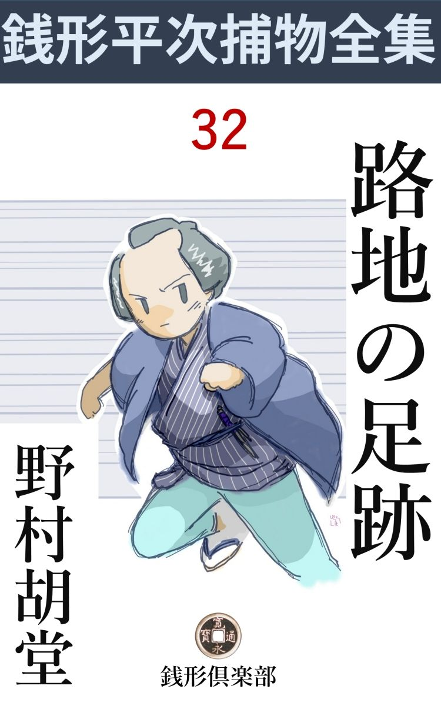
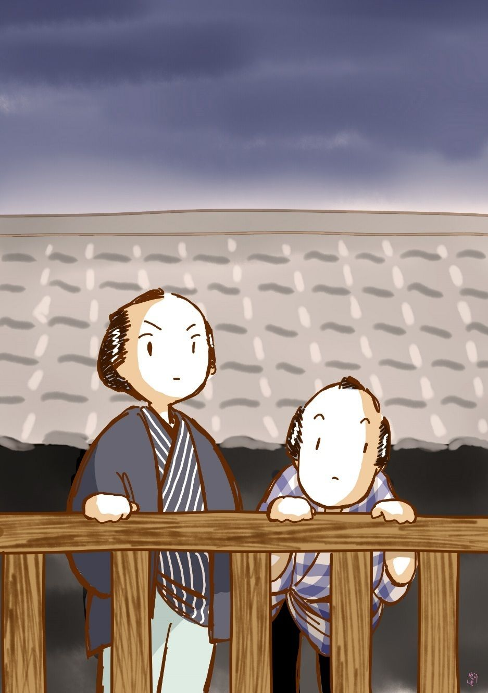

| 路地の足跡: 銭形平次捕物全集第32話 (銭形倶楽部) | |
| 野村胡堂 | |
| ZENIGATA CLUB (2018) | |

一
「銭形の親分さん、お助けを願います」
柳原土手 、子分の八五郎と二人、無駄を言いながら家路を急ぐ平次の袖へ、いきなり飛付いた者があります。
「何だ何だ」
後から差 覗 くガラッ八。
「どこか斬られなかったでしょうか、いきなり後ろからバサリとやられましたが------」
遠灯 に透 せば、二十七八の、芸人とも、若い宗匠とも見える一風変った人物。後向きになると、絽 の羽織は肩 胛 骨 のあたりから、帯の結びっ玉のあたりへかけて、真一文字に斬り下げられ、大きく開いた口の中から、これも少し裂 かれた単 衣 が見えるのでした。
「大丈夫、紙一枚というところで助かったよ。ひどいことをする奴があるものだね。辻斬にしちゃ不手際だが------」
平次はさすがに、斬口の曲 った工合から、刃先の狂いを見て取りました。
「辻斬なら仔細は御座いませんが、------この間から、時々こんなことがありますので、油断がなりません」
男は真夏の夜のねっとり汗ばむ陽気にも拘わらず、ぞっ とした様子で肩を顫 わせました。町の灯 の方へ向くと、青白い弱々しい顔立ちで、色恋の沙汰でもなければ、命を狙 われそうな柄ではありません。
「そいつは物騒だ。命を狙われちゃ、いい心持のものじゃあるめえ。------送って行ってあげよう。お前さんの家はどこだえ」
「横山町まで参ります」
「横山町？」
「遠州屋の者で」
「遠州屋は大 分 限 だが------店の者にしちゃ」
平次は頸 を捻 りました。絽の羽織、博 多 の帯、越 後 上布 の単 衣 、------どう見ても丁 稚 や手代の風俗ではありませんが、仔細あって、横山町の遠州屋の主人はツイ先頃非 業 の死を遂げ、跡 取 りはまだほんの子供だという話を聞いていたのでした。
「甥 の金之丞と申します」
「それじゃ、能役者をしていた好い男てえのはお前さんかい」
ガラッ八の八五郎は、ツケツケしたことを言って、金之丞と名乗る男の顔を差しのぞきました。
「お恥かしいことで御座います」
「恥かしがることはねえが、命なんか狙われるようじゃ、好い男に生れつくのも考え物だね」
と八五郎。
「安心しろよ。手前なんかは、生れ変ったって、財 布 や命の狙われっこはねえ」
平次はツイ口を容れました。金之丞の恐れ入った調子と、それに対照して、八五郎のトボケた調子が、たまらなく平次の好謔心 を嗾 ったのでしょう。
「お蔭様でね」
「怒るなよ、八。その方が無事でいいぜ」
平次は尚 も追及しました。
「全くで御座います。親分さん。命を狙われるのが、こんなにイヤなものとは、思っても見ませんでした。二階から突転がされたり、知らない人から喧嘩を吹かけられたり、食 物 へ石 見 銀 山 が入っていたり、------」
「そんな物騒な身体を、なんだって亥刻 過ぎの柳原なんか持って歩くんだ」
平次の調子は少し腹立たしそうでした。辻斬と夜 鷹 の跳梁 する柳原を、真面目な人間が通るにしては、全く遅 過 ぎました。
「いやなことばかり御座いますので、明神様へ七日間の日参を心掛けました。------今日満願という日、意地の悪いことに、朝から客と用事が立て込んで、どうしても出られません。今考えて見ると、それも私を狙う者の細工だったかも知れませんが、とにかく、身体が明いてホッとしたのは、戌刻 半過ぎじゃ御座いませんか」
「------」
「お詣りを済まして、明神 坂を下ると、変な男が、後ろからヒタヒタと跟 いて来るじゃありませんか。こっちが急げば向うも急ぎ、立ち停れば立ち停り、怪しいとは思いましたが、往来の人をとがめるわけにも参りません。筋 違 を入ってここまで来ると、いきなり後ろから、一 太 刀 浴 せられたような気がしましたが、振り向いて見る気もしません」
「------」
「親分さんをお見かけした時は、本当に夢中で飛付いてしまいました」
「こんなに暗いのに、よく私ということが判ったね」
「それはもう、助かりたい一心で------」
そんな話をしているうちに、三人は横山町の遠州屋の前に来ておりました。
「お礼と申しちゃ何ですが、お茶でも入れて、ゆっくり申上げたいことも御座います」
しきりに引止める金之丞の手を振り切って、平次とガラッ八は夜の街を家路に引返しました。
二
翌日は、金之丞は手土産を持って平次のところへ顔を出しましたが、さすがに身に恥 じたものか、自分を狙う者の心当りについては、何にも打明けません。
「これからのこともあるだろうから、自分に怨 を持つ者の心当りだけでも話して置いちゃどうだ。親分はそんなことを人に言う気遣いはねえ------」
ガラッ八は見兼ねていろいろ勧 めましたが、
「いえ、人様を疑ってはすみません。蜒分さんが蔭ながら付いていて下さると解れば、どんな者だって滅多に手を出しゃしません」
金之丞はたしなみ 深く口を緘 んで、そのまま帰ってしまいました。
それから三日目。
夏の涼みの賑いも今宵あたりは頂上と思われる晩、平次はお静やガラッ八を相手に、縁側へ煙草 盆 を持出して、両国で揚げる遠花火を眺めていると、
「親分さん、た、大変なことになりました。直ぐ御出で下さるように------と、金之丞様からのお願いで御座います」
六十年輩 の爺や------遠州屋の仁助というのが飛込んできました。
「大変なことと言うと、金之丞という好い男が怪 我 でもしたのかい」
とお先っ走りのガラッ八。
「いえ、お内儀さんが花火を見ていなすって、屋根の上の物干から落っこちなすったんで------」
「それじゃ外科 へ行くがいい。親分の畠じゃねえ」
「手摺 を越して落っこったのが不思議でならねえと、金之丞様が申しますんで------」
「何？ 手摺を越して落ちた、------怪我は？」
平次はもう立ちかけております。
「お気の毒なことに金之丞様が駆け付けて、いろいろ介抱なさいましたが、軒下に積んだ石 材 に頭を打ちなすって------」
「そうか、------そんなこともあるだろう。遠州屋には悪いことが起りそうだと思って、この二三日気を付けていたが、到頭やりやがったか。八、大急ぎで行ってみよう」
「へエ------」
三人は宙 を飛びました。いや、二人は宙を飛んで、一人は大地を這ったと言った方が穏 当 かもわかりません。とにかく、平次とガラッ八が横山町へ着いた時は、遠州屋の上下は、圧迫された恐怖が、不気味に立ちこめて、その辺にいる者を皆 な窒 息 させてしまいそうでした。
「あッ、親分さん」
金之丞は早くも二人を見付けて、救われたような声を出しました。
誰に案内されるともなく入って見ると、すっかり息の絶えた遠州屋のお内儀お安の死体は、奥の一間に運び込まれて、血潮を拭き浄 められております。
「変死に違いありませんから、お役人方や親分さんの見えるまで、手を付けちゃならないと申しましたが、支配人の佐吉が聴き入れません。------物干から落ちて亡くなったのは、外科が言い開くだろう、こっちから望んで検 屍 を受けるわけはねえ、仏を路地へ抛 り出して置くのはよくないことだ------と申して、到頭ここへ運び入れましたが、私にはどうも腑 に落ちないことばかりで御座います」
金之丞の言葉を聴きながら、平次は女共を退 かせて、一応死体の傷所を検 べました。
四十前後といっても、大家 のお内儀でまだ充分若くも美しくもあったお安ですが、柘榴 のように頭を割られた上、こう血 潮 に汚れては見る影もありません。
「おや？」
平次は一寸眉を顰 めました。頭に受けた傷が命取りだったに相違ありませんが、その他、肩に打撲 が一ヵ所、これは背中へかけて大きく青 痣 になっております。
「私が駆けつけた時は、石を枕にして、横っ倒しになっておりました。何分石の多い所で、------一応見て置いて下さいませんか、素人の私にも、誤 って落ちたとは思えないことばかりで御座いますが」
女のような物優しい口をきく金之丞は、恐る恐る平次の顔をのぞきます。
「何？ 岡っ引を呼んで来た。飛んでもねえ、誰が、そんな細工をしやがったんだ。物 干 が悪きゃア大工でも呼んで来るがいい」
「シッ、六さん、声が------」
隣りの部屋で無遠慮にわめくのを、若い女が一生懸命止めている様子。それが手に取る如く聞えるので、金之丞は立ったり坐ったりしております。
「金之丞さん、あれは？」
「ヘエ、親分さん、少し酔っているようですから、御聞捨てを願います」
「品川へ沖釣 に行って、自分だけ助かって来たという、亡くなった主人の義 弟 の六郎さんというのだね」
「ヘエ------」
三
「親分さん、外廻りを御覧下さいませんか、土蔵と母 家 の間の路地は、そのままにしてある筈ですが」
バツの悪くなった金之丞は、六郎の不遠慮な蔭 口 を封 ずるためには、平次を外へ引っ張り出す外に術 はなかったのです。
「いや、物干から先に見せて貰いましょう」
「それじゃ」
平次とガラッ八は、金之丞の後について二階へ昇りました。
梯子段 を昇る時、何心なく隣りの部屋を覗くと、三十二三の遊び人風の男を、十八九の可愛らしい娘が、一生懸命なだめているのが見えます。道楽者で、小 博奕 を打つという持て余し者の六郎が、兄の死んだ後、この家へ入り込んで来て、支配人の佐吉や、甥 の金之丞がイヤな顔をする中に、我儘一杯に振舞っていることは、平次はこの騒ぎの前に調べていたのです。
「あの娘さんは？」
「お里と申します。亡くなった叔母の妹で」
「成程、好い縹緻 だ。お前さんと一緒になるとかいう」
「飛んでもない。------そんな話もないじゃありませんでしたが、二人はどうも性 が合いません」
金之丞は大急ぎで平次の口を封じました。
二階へ昇ると、支配人の佐吉が、駆けつけた分家や親類の人と応待して、何やら重大そうに囁いております。見たところ四十七八、立派な白鼠 で、月 代 の光り工合も、分別らしさも、全く申分はありません。
「銭形の親分さん、------飛んだ御苦労様で。なアに、物干の手 摺 がどうかしていたんで御座いましょう。金之丞さんが一人で騒ぎますが、------人を殺そうとする程の太い料簡の者が、物干から人を投り出す筈は御座いません。首尾よく死ねば本望を遂 げるでしょうが、二間や三間のところから落ちたところで、人間は滅多に死ぬものじゃ御座いません。お内 儀 さんが死ななかった日にはどうなります」
支配人の佐吉は、さすがに老巧 な物の考えようをします。
「番頭さん、その通りですよ。私も疑ってなんかいませんが、金之丞さんがあんまり騒ぐから、手摺の工合だけでも見て置こうと思ってネ」
と平次。
「それはもう、どうぞ御覧下さいまし」
「ところで番頭さん、お内儀さんが物干へ上がった時、側に誰がいなすったえ」
「お里さんが附いていましたが、一寸用事を思い出して、階 下 へ降りたそうです」
「二階には？」
「私と、六郎さんがいましたが、私はこの部屋で、六郎さんは縁側から花火を眺めていたようで御座いました」
「すると、物干にいるお内儀さんを突き落せるのは、六郎さんとお里さんと、お前さんと三人だけということになるネ」
「ヘエ------そう仰しゃればその通りですが、親分さん」
「まアいい。誰も、番頭さんが突き落したとは言やしない」
平次の言葉の裏に潜 む意味の恐ろしさ怯 えたものか、佐吉はサッと顔色を変えて口を緘 みました。
「ところで、お内儀さんは平常 眩暈 などのすることはなかったでしょうか」
平次は改めて静かに問いかけます。
「女の四十二三と申しますと、よく頭痛や眩暈に悩まされる年頃で、お内儀さんもよく立ち昏 みがすると申しておりました」
「そんなこともあるだろうね。ところで、お内儀さんが落ちた時、声を出した筈だが」
「それはよく聞えました。アッと言うと、どしん、と来ましたので、何をしたのかと縁側へ飛出すと、向うの縁側から、六さんが顔を出しておりました」
「声はたった一度きりだね」
「いえ、下へ落ちてからも又、きゃっと言ったようで」
「その通りだね、金之丞さん」
平次は後ろにしょんぼり立っている金之丞を振返りました。
「ヘエ、落ちる途中で、声を出したかもわかりません。とにかく、私が聞いたのはたった一声だけで、驚いて母 家 から飛出して抱き起すと、もういけませんでした」
「有難う、それじゃ物干を見せて貰いましょう」
平次とガラッ八は、縁側へ出ると、戸袋の後ろに取付けた段々を幾つか昇って、思いの外岩乗 な物干に出ました。
屋根の端っこまで乗り出した造りで、下までは三間足らずでしょう。三方にめぐらした手摺は丁度大人 の腰の下まで届くほど。眩暈 がした位では、これを乗り越して下へ落ちそうな様子はありません。その上、恐ろしく厳重 な造りで、かすがい まで打ってありますから、一方が外 れたのでないことは、たった一目で判ります。

「成程、これは可怪しい。殺されたんでなきゃア身投げだ」
と平次。
「物干から身投げってことはないぜ、親分」
ガラッ八は鼻の下を長くして、物干の下、母家と土蔵の間の狭い路地を見下ろしておりました。
「そこから飛降りてみな、八」
平次は妙なことを言います。
「下の石 材 に脳天 を潰 されるのは有難くないぜ、親分の前だが」
「石材 を除けて飛降りたらどうだ」
「二間半もあっちゃ、足を挫 きますぜ」
四
それから平次は、階下 へ降りて、石 材 を置いてある空地の闇を舐 めるように見廻しました。
「八、提灯を借りてくれ」
「いえ、私が持って参りましょう」
金之丞は母家へ入ると、直ぐ提灯に灯を入れて持って来ました。
「これは大変だ」
石材 の山を染めて、斑々 たる碧血、全く眼も当てられません。
土蔵の修復に使った残りで、大小二三十の石は、何の意味もなく積んでありますが、そのうちの幾つかは庇 の下にハミ出して、それが、お安の頭を打ったのでしょう、わけても、沢 庵 の重しほどの三四貫もあろうと思われる御 影 の三角石は、蘇 芳 を塗ったように紅 に染んで、提灯を近づけて見ると、髪の毛らしいものが二筋三筋粘 りついております。
「ひどいことをするじゃないか」
平次は独言を言いながら、尚も四方 を見廻しました。母家と土蔵の間で、滅多に陽が当らないせいもあるでしょう、その辺は散々踏み荒されて、何れが誰の足跡とも判りませんが、あわてたせいか、大抵は素足で、中に一きわ深いのも交 っております。
「金之丞さん、死体を抱き上げたのはお前さんだね」
「へエ------」
「この足跡がその時のだろう。金之丞さんのでないと話が面倒になる。一寸足を合せて見て下さるまいか」
金之丞は不気味そうでしたが、それでも素直に下駄を脱いで、深い足跡の上へ、自分の足を重ねます。
「おや？ 金之丞さんの足より少し大きいようだが」
「こりゃ違いますよ、親分」
提灯を振りかざしたガラッ八も、足跡と足との間に、かなりの隙間があるのに気がつかずにはいません。
「こりゃ可怪 しい。すると金之丞さんが死体を抱き上げた時の足跡は？」
「これで御座いましょう」
金之丞は三角石の側、半分血にひたった足跡へ、自分の足を持って行きました。成程それもかなり深く印されたもので、金之丞の足にピタリと合います。
「こんなことでよかろう。------お内儀さんは物干から投げ落された。下手人は、大きい声では言えないが、番頭の佐吉か、亡くなった主人の義 弟 の六郎か、妹のお里か、この三人のうちだ。------金之丞さん、よく気をつけて下さい」
「へエ------」
平次はこんなことを囁くと、先に立って、そこから一番近い下男部屋を覗きました。
「爺やさん、お前さん何とか言いなすったね。先刻は御苦労」
「仁助と申しますよ。ヘエ、一生懸命駆けましたが、若い人の足には敵 いません」
平次の家から帰って、もう四半 刻 以上も経ちますが、爺やはまだ打ちのめされたようになっております。
「お内儀さんが物干から落ちた時、お前さんはここにいたんだね」
「ヘエ、ここにはおりましたが、入口は向うですから、見えません」
「声位は聞いたろう」
「あッ と仰しゃったようですよ」
「落ちてからか、落ちる前か」
「落ちてからで御座います。ドシンと音がして、それからあッ と、------恐ろしい声で御座いました」
「よしよし、それだけ判ると大助かりだ」
「左様で御座いましょうか」
爺やは何となく奥歯に物の挾 まったような物の言いようをします。
「爺やさん、何か考えていることがあるようだね。言ってくれないか」
と平次。汚 い下男部屋の上り框 に腰を下ろしてしまいました。
「いえ、何にも考えてなんかおりません」
「そうじゃあるまい。------この家で、主人とお内儀が死んで、儲 かるのは誰だろう？」
「皆 な損で御座いますよ。御主人は釣 道 楽 があっただけで、本当に良い方で御座いました。お内儀さんは情け深くて、これも申分のない------」
「それは判っている、後はどうなるだろう、この大身代は」
「坊ちゃまが御座います。もっともまだ五つになったばかりですが------」
「後見は？」
「六郎様か、金之丞様ということになりましょう、もっとも永年勤めた、忠義な支配人 さんがおりますが、------これは奉公人ですから、帳場だけをお預りして、内輪のことはやはり身内の方が見て下さることでしょう」
「すると、儲かるのは、六郎さんか、金之丞さんか、番頭の佐吉さんということになるネ」
「飛んでもない、親分さん」
爺やはあわてて乗出しました。平次の後ろに、金之丞が酢 ぱい顏をして立っていたのです。
五
もう一度家の中へ取って返すと、跡取りの徳太郎という五つになるのが、家の中の騒ぎに眼を覚 して起き出したのを、叔母のお里が一生懸命撫 めている最中でした。母親の痛ましい姿を見せないためでしょう。
平次が佐吉に逢って、二言三言、爺やに訊ねたような事を繰り返して、ガラッ八と二人遠州屋の裏口から出ました。
「大層遅くなったな、八」
「子刻 でしょう。------ところで親分。やはりあれは殺されたんでしょうか」
「お前の言い草じゃないが、物干から身投げをする者はないよ。だが、殺した証拠は一つもないんだから検屍にも及ぶまい」
「誰がやったんでしょう」
「それが判りゃ」
二人はそんな事を言いながら柳原へかかろうとすると、後ろからヒタヒタと跟 けて来た男が、
「親分さん、ちょいと、お待ちなすって」
いきなり声を掛けました。
「爺やさん。お前さんが跟けて来るのは知っていたよ、何か言いたいことがあるんだろう」
「ヘエ、お察 しの通りで、私は遠州屋には、先々代様から三十年も御 厄 介 になっております。みすみす御主人夫婦が悪者の手に掛って亡 くなられたのを知りながら、黙っちゃいられません」
仁助爺やは、ハアハア息を切りながらも一生懸命でした。
「心当りがあるとでも言うのかえ、爺やさん」
「心当りどころじゃ御座いません、------泳ぎの御自慢な御主人が溺れて、徳 利 の六郎さんがノコノコ生きて帰って来た時から、私はもうこんな事になるだろうと思っておりました」
「フーム」
「物干から御内儀さんの身体を逆様 に投げ落すほどの力のあるのは、あの家の中にはたった一人しかおりません。坊っちゃまはまだ五つですから、後見人となれば、あの何十万両の身代は六郎さんの自由になります。金之丞さんも身内には相違ありませんが、縁が遠くなりますし、それに、あの通り弱い方 で、大 店 を切り廻す方じゃ御座いません。支配人 の佐吉さんは六郎さんには一番の苦手ですが、これは奉公人ですから、いざとなれば暇をやる術 もあります」
爺やは意気込みました。その言うことは一と通りも二た通りも条理が立って、さすがの平次も承服しないわけには行かなかったのです。
「親類方や分家の主人などは、六郎の後見を承知するだろうか」
これが残る唯 一の疑いでした。
「承知するもしないも御座いません。少し厭な顔をしても喧嘩を吹っかけられます。あの六郎さんという人は、狂 犬 のような人間で------」
「それじゃ、後見人になったところで、肝 腎 の子供が、いやがって寄りつかないだろう」
「ところが、不思議なことがあるもので、坊っちゃんは、荒っぽい六郎叔父さんが大好きで、叱られても、時々はからかい半分に打たれても、あの恐ろしい叔父さんへばかり付いております。角力 だの撃 剣 だの、喧嘩だの勝負事だのと、荒っぽい碌でもない事を教えるからで御座いましょう。私はそれが心配でなりません」
仁助爺やの言う事は予想外なことばかりです。
「お里とかいうのは、どんな事を考えているんだ」
「若い女の心持などは私に解 りませんが、あれも変り者で、あんな優しい綺麗な顔をしているくせに、飛んだ気性者で御座いますよ。一緒にするようにと話のあった金之丞様を、------役者のような男は嫌いだ------と申して、どうしても承知しません。近頃は坊ちゃんの相手をしながら、お勝手向を切り廻しております」
「番頭 さんの身持は？」
「よく存じませんが、大店 の支配人 のことですから、一人や二人囲 い者があったところで、文句を言う方が間違っております。それにあの年まで女房も持たず、暖 簾 を分けて貰う当 もないのですから」
「成程、そうしたものだろうな、爺やさん有難う、お蔭でいろいろの事が判ったような気がするよ」
平次は爺やをなだめて帰すと、ガラッ八を促して、黙々と家路を急ぎました。
六
平次はそれから二三度遠州屋へ行って見ました。仁助と金之丞はいろいろ親切にしてくれますが、六郎をはじめ、佐吉もお里も、店の者も白い眼を見せるので、稼業柄 とはいっても、あまりいい心持はしません。
一方、遠州屋の空気は、いつからとなく、はっきり六郎に反 いて行きました。金之丞や仁助が疑い始めたのへ、佐吉も、他の奉公人も従 いて行ったのでしょう。
一つは、商人の家の空気の中に住むと、六郎は全く始末の悪い存在で、その荒々しい気風と、喧嘩早い太々 しさは、皆 なから反感を持たれるのも、無理のないことだったのです。
やがて、主人を海へ沈めたのも、お内儀 を物干から投げ飛ばしたのも、六郎に相違ない------といった疑いが、家中の者を始め、親類の人達まで支配しました。
初七日が済んで直ぐ開いた分家や親類方の相談で、六郎はこの家から立退いて貰うこと、跡取りには相違なく徳太郎を直し、十七歳になるまでは、従 兄 弟 の金之丞が後見人になり、佐吉は相変らず支配人 として、店の方を万事取締って行くことに決めてしまいました。
これは大勢の力で押し切ったことで、六郎はカンカンに腹を立てましたが、どうすることも出来ません。
越えて三日目。
「親分さん、坊ちゃんが見えなくなりました。お願いですから捜 し出して下さい」
遠州屋の死んだお内儀の妹、若くて美しいお里が、泣きながら平次の家へ飛んで来ました。
「それは大変だ、心当りは探したろうな」
草履を突っかけながら、平次。
「お友達の家は申すに及ばず、御近所から、親類方を残らず訊 きました」
「何時から見えないんだえ」
「昨夜 、------夕方から宵のうちで御座います。寝かしつけようと思うと、どこにも見えなかったので、大騒ぎになりました」
「晩飯は？」
「頂かせました」
「平常着 のままだね」
「え」
「坊ちゃんが一番嫌っているのは誰だい」
平次は妙な事を訊きます。
「金之丞さんで御座います。あの方は外へ出ると土産を山ほど買って来て御機嫌を取りますが、どうしてもなつい てくれません、------商人もたしなみだからと言って、仕 舞 などを教えようとなさるからでしょう」
「そんな事もあるだろうな、------ところで、一番坊ちゃんのなついているのは？」
「私で御座います」
お里は、誇 らしい顔をあげました。厄そこそこの年ごろでしょうが、苦労をしたせいか、美しいうちにも、何となく凛々 しいところのある娘です。
「それは間違いもあるまい、その次は」
「さア------」
お里は言い淀 みました。
「遠州屋から退転した六郎のところを搜したろうな」
「それが、行方 がよくわかりません」
困惑が美しい顔を曇らせます。
「六郎が坊ちゃんを手なずけて困る、------と店中の者が言っていたぜ。剣術ごっこや喧嘩や勝負事は、子供には仕 舞 や謡 より面白いだろう。大急ぎで六郎の行方を搜して見るがいい、俺の方でも手配してみる」
平次はガラッ八を顧 みて顎をしゃくりました。こう言っただけで、この鼻の良い男は、八丁堀へ飛んで、六郎の行方を探す手配をしてくれるでしょう。
「親分さん、------六郎さんは、そんな悪い方じゃ御座いませんが、私は反って、あの番頭さんが」
「何？」
「いえ、何でも御座いませんが、六郎さんは、坊ちゃんを誘拐 すような方じゃないと思います」
「お前さんも六郎組か、そんな事もあるだろう」
平次はたいして気にもしない様子で、とにかくお里と一緒に遠州屋へやって行きました。
家の中は、お内儀さんが死んだ時よりも一段の騒ぎ。
「親分さん、どうしましょう、あの子に間違いがあってはこの店が潰 れます。たった一粒種ですから、何とかして探して下さい」
金之丞はそう言いながら、本当に泣き出しそうです。
徳太郎の部屋というのを見ると、成程お里が言った通り玩具 だらけ。
「これが皆なお前さんが買ってやったのか。可愛がるのはよいが、子供にこんなに沢山玩具を買ってやると、馬鹿になるぜ」
「ヘエ------」
「が、心配しないがいい、坊ちゃんの命に別条はないよ、万一のことがあると、跡取りは親類方が分家から次男坊でも連れて来るだろうから、お前さんが疑っている六郎だって、大事の玉を殺すものか」
平次の言うのは全くでした。後見人の位置や、この遠州屋の財 産 を狙っての細工とすれば、もしや六郎が連れ出したにしても、徳太郎を殺すような事は万に一つもないでしょう。
「そんなものでしょうか、親分さん」
金之丞も漸 くホッとした様子です。
一応訊 くだけは訊いた平次、引揚げようとして裏口へ来ると、仁助爺やが呼止めました。
「親分さん、大変な事を見付けましたよ、今晩参ります。どこへも出ずに待っていなすって下さい」
「------」
「下手人は判りました、動かぬ証拠をお目にかけましょう」
「シッ」
誰か立聴きしている様子に感づいて、平次はそのまま裏口から外へ出てしまいました。
七
その日のうちに六郎の隠れ家が見付かりました。平次の見込み通り、徳太郎は三河町の叔父の家で、剣術ごっこをして遊んでいるところを、ガラッ八とその又手下の諜者 に発 見 られたのです。
その時ガラッ八の八五郎は、六郎へ縄を掛けようとしたばかりに、
「何をしやがる、甥 が好きで叔父の家へ遊びに来ているのに不思議があるか、安岡っ引などに縛られる覚えはねえ」
六郎に暴れ出されて、大組打ちが始まり、六郎もガラッ八も少しずつですが、怪我をしてしまいました。
六郎はそこから直ぐ挙げられ、徳太郎は嫌がるのを無理に遠州屋へ引取られたことは言うまでもありません。
「何だって六郎を縛ったんだ。つまらねえ事をしやがる」
平次はプリプリしましたが、今となってはどうすることも出来ません。
しかし事情は、その晩最後の飛躍をして、到頭恐ろしい結末 まで運んでしまいました。
「八、------気になることがあるんだ」
と平次、浮かない顏をして外ばかり気にしております。
「何です、親分。六郎を縛ったのが、そんなに悪い事でしょうか」
「いや、今晩ここへ来る筈の仁助爺やが来ないのが心配なんだ、------もう亥刻 だろう」
「仁助爺やがどうかしましたか」
「どうもしなきゃアいいが、------行ってみよう、行き違いになったら、ここで待って貰うとして」
平次はお静に言い含 めて、腕に繃帯 をしたガラッ八と一緒に出かけました。
行先は横山町の遠州屋。
「仁助爺やはいるかい」
店から入って訊きましたが、宵から誰も仁助の姿を見た者はありません。
下男部屋を見ましたが、そこも空っぽ。
念のため裏口の方を探しに行くと、裏木戸の内、建物と板塀の間に挾 まって、ボロ切れのように倒れていたのは紛 れもない仁助爺やです。
引き起して見ると、
「あッ」
左の背中、肩胛骨 の下から匕首を突き刺されて、冷たくなっているのでした。
後ろから心臓をやられたのですから、多分声も立てずに死んだのでしょう。それにしても恐ろしい手練で、匕首を抜かなかった所 為 か、ろくに血も出ておりません。
「この匕首は？」
平次は死体の背から刃物を抜いて見せると、五六人従 いて来た人々は、互いに顔を見合せて口をきく者もありません。
「親分さん、やられました。それは私ので------」
恐る恐る出たのは、青い顔をした金之丞です。
「本当にお前さんの品に相違あるまいな」
「ヘエ、間違い御座いません------さる御屋敷からの拝領 の品で、自慢の短刀で御座います。それが私の品ということは店中で知らないものは一人も御座いません」
「親分」
八五郎は懐の捕縄を爪繰 りました。
「八、早まるな、それほど皆なに知れている短刀で人を殺す馬鹿はない。おまけに、殺して二た刻も経つのに、その目印の刃物を抜かずに置くということがあるものか」
「ヘエ」
「これを見るがよい、これは誰のだ」
死体の側から拾い上げたのは、金 唐 革 の洒落 た懐煙草入れが一つ。
「あッ」
今度は支配人 の佐吉が青くなりました。
「番頭さんの品だろう」
「イエ、ヘエ------」
何という惨 めな返事でしょう。
「八、これが出るのを待っていたんだ」
「すると、親分」
「待て待て、早まっちゃならねえ、------仁助爺やはお内儀さんを殺した相手を覚 ってその証拠を見付けた。今晩俺のところへ言いに来ると聞いて、下手人はここに隠れて仁助を剌した」
「親分」
「俺も長い間お上の御用を聞いていろいろの事に出っくわしたが、こんな手数の掛った、恐ろしい悪党を見たこともねえ。八、よく見て置くがいい、俺は今漸 くそのからくりが解った、いいか、俺の指の先にいる野郎を縛るんだよ」
平次はそう言いながら、静かに手を挙げました。その指の向く先にいたのは、佐吉？ 否 、お里？ 否。
「それツ」
平次の指が向く前に、サッと逃出した男。
「野郎ッ」
八五郎は飛付いて、恐ろしい格闘 が始まりました。腕に怪我をしているガラッ八には、手に余る捕物ですが、平次の加勢で漸く縛り上げ、灯 の先へ顔を持って来ると、
「あッ」
何とそれは、あの女のように優 しい能役者崩れの金之丞ではありませんか。
八
「今度ばかりは見当がつかなかったよ」
平次は、二三日経ってから、つくづく述懐 しました。
「下手人はどうしても六郎だ、理詰に考えると、外に疑いの持って行きようはねえが、五つになる子供が金之丞を嫌って、あの荒っぽい六郎になついているのが不思議でたまらなかった。------大人は騙せる、子供は騙 せるものでない」
「------」
「あんなに玩具を買って来て、一生懸命御機嫌を取る金之丞より、叱ったり打ったりする六郎が好きだというのは、子供は神様のようなものだから、人の腹の中まで見抜くんだね。俺は考えたよ」
「------」
「その六郎が縛られると、木当の下手人は爺や殺しの疑いを直ぐ誰かに持って行かなければなるまい。今まで六郎を疑わせるように細工をしていたんだから、筋書は又すっかり新しくなる。わざと自分の匕 首 で爺やを剌したのは金之丞の喰えないところで、銭平形次の知恵の底の底まで見 破 ったつもりの細工さ。あれだけだと、俺も金之丞を疑う気にはならなかったかも知れないが、死体の側へ佐吉の煙草入れを落したのが、細工過ぎて反 って悪かった。俺が、下手人が解った、今指さしてやる------と言った時は、さすがに金之丞も顔色が変ったよ」
平次の話は明快ですが、まだ八五郎には解らないところだらけです。
「遠州屋のお内儀を殺したのは誰でしょう、あの時は金之丞は確かに階 下 にいた筈だが」
と八五郎。
「俺もそれが判らなかったが、金之丞ではあるまいか------と疑っていた。第一、柳原で俺達へ飛付いた時、あの闇の中で、不意に俺と気のついたのが可 怪 しい」
「なアる」
「羽織の背を切ったのも、刀で斬り下げたのではなくて、小刀 で静かに破ったのだ。切り口が曲っている------と俺はあの時言ったろう。金之丞は、自分が狙われているように見せかけたのだ」
「ヘエ、成程ね」
「それから、物干から遠州屋のお内儀を突き落した人間は、お内儀に続いて、物干の柱を伝わって飛降り、半分気を喪 ったお内儀の頭を、三角石で叩き割った」
「------」
「お内儀は突き落された時と、石で頭を打たれた時と、二度悲鳴を拳げた。それは番頭の言う通りだ。上から落ちた勢いで頭を打って死んだものなら、落ちる音がしてから悲鳴を挙げたという爺やの言う事が嘘 になる。それから、お内儀の肩に青い痣 になった打撲 は、落ちた時の本当の怪我で、三角石へ真っ逆様に落ちて死んだものなら、あんな傷はつく筈はない」
「------」
ガラッ八はもう口もきけないほど驚いております。平次の明察は、あの時もうこんな事まで見抜いていたのです。
「金之丞は能役者 崩れで身が軽いから、物干からお内儀を突き落して、すぐ自分も飛降りたのだよ。深い素足の足跡はその時ついたのだ」
「少し足跡の方が大きかったじゃありませんか」
「二問半も高いところから飛降りるんだ、どんな身軽なものでも足元がよろける、足跡の方が少し大きくなるのは当り前だ。ピタリと合う方が不思議だろう」
「ヘエ------恐れ入ったね、親分」
「物干から飛降りて、半分気を喪 っているお内儀を殺して、それから母 家 から駆出したような顔をしたんだ。あんな恐ろしい悪党はない。その上、六郎が縛られると、爺や殺しの疑いを番頭の佐吉へ持って行こうとした」
「遠州屋の主人が溺 れたのは、六郎のせいじゃありませんか、親分」
ガラッ八は取って置きの疑いを持ち出しました。
「あれは全くの過 ちだったんだ、船が引くり返ると、どうかすると、泳げるのが死んで、泳げないのが船底へ噛 り付いて助かるものだ、------遠州屋の主人が死んで、疑いが六郎の方へ掛かるのを見て金之丞は細工を始めたのだよ。六郎は荒っぽい人間だがこの上もない善人さ、徳太郎が慕 って後を追っかけるのも、お里がよい男の金之丞を嫌って、六郎に心を寄せるのも無理はない。人間は肚 が綺麗だと良いことがあるものだ。なア、八、そのうちに、八五郎さんでなくちゃと言う娘が飛出すかも知れないぜ」
「親分、冗談じゃねえ」
八五郎も、この時ばかりは悪い心持ではなかったようです。
（編注）
作品中には、身体の障害や人権にかかわる、差別的な語句や表現が見られますが、本書が成立した当時の時代背景等が現代とは異なる古典的な文学作品でもあり、著者が故人でもありますので、底本のままとしました。ご理解、ご諒承のほどをお願い申し上げます。
著者---野村胡堂
挿絵---萩 柚月 © 2017
初出---「オール讀物」昭和九年九月号 文藝春秋社
底本---「錢形平次捕物全集」第二巻 河出書房 昭和三十一年五月三十一日初版
編集・発行 銭形倶楽部